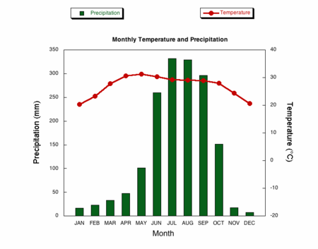

You should spend about 20 minutes on this task.
The climograph below shows average monthly temperatures and rainfall in the city of Kolkata.
Summarise the information by selecting and reporting the main features and make comparisons where relevant.
Write at least 150 words.

The chart compares average figures for temperature and precipitation over the course of a calendar year in Kolkata.
It is noticeable that monthly figures for precipitation in Kolkata vary considerably, whereas monthly temperatures remain relatively stable. Rainfall is highest from July to August, while temperatures are highest in April and May.
Between the months of January and May, average temperatures in Kolkata rise from their lowest point at around 20°C to a peak of just over 30°C. Average rainfall in the city also rises over the same period, from approximately 20mm of rain in January to 100mm in May.
While temperatures stay roughly the same for the next four months, the amount of rainfall more than doubles between May and June. Figures for precipitation remain above 250mm from June to September, peaking at around 330mm in July. The final three months of the year see a dramatic fall in precipitation, to a low of about 10mm in December, and a steady drop in temperatures back to the January average.
(173 words, band 9)
You should spend about 40 minutes on this task.
It is now possible for scientists and tourists to travel to remote natural environment, such as the South Pole.
What are advantages and disadvantages of this development?
Give reasons for your answer and include any relevant examples from your own knowledge or experience.
Travelling to such places as the poles seemed to be unthinkable a few centuries ago. Now both scientists and tourists can do it, but is it a positive achievement? - I doubt it, and I am going to explain why.
When Roald Amundsen reached the South Pole and set up a Norwegian flag there, the whole world admired his courage and determination. Captain Scott and his team were less successful and unfortunately none of his companions managed to come back. The captain’s diaries and letters to his unborn son cannot be read without tears and compassion. These are two remarkable examples of inner strength and unbroken spirit which cannot be underestimated.
There is no doubt that a lot of things have become more affordable for the past decades. Nevertheless travelling to remote natural environments need to be prepared thoroughly. The ways of transport like snowmobiles cannot be compared with dog sledges or skates. Tourists do not need to have food depots, they can transport all the food, clothes and necessary equipment with them. I am convinced that seeing all the untouched beauty of the nature will leave everyone speechless as this beauty can hardly be expressed by words.
We must acknowledge that people do more harm to the nature wherever they appear. We cannot deny that Everest has become a greatest dump “thanks to” all the tourists who climb it. They all are looking for excitement and new experience, but what is left behind them? I am convinced that such places as the South and North poles should become ecological reserves and their activity has to be supervised by the government and environmental organizations. There are other numerous ways of searching the information except visiting the places. Ecotourism should be restricted as well because thousands of species of animals have been disappeared for ever.
Overall, tourism to distant places does great harm to the environment. The governments should take measures to protect the habitat of rare animals and plants from people.